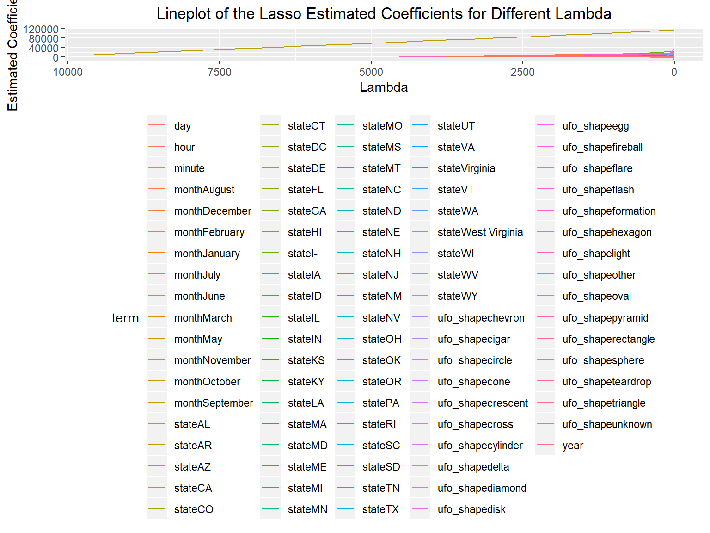
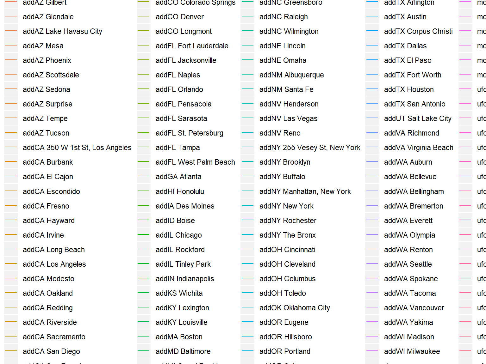

# knitr will run the chunk but not include the chunk in the final document
# copy from Jeff
# ensure reproductivity
set.seed(10)
# load library
library(tidyverse)## -- Attaching packages ------------------- tidyverse 1.3.0 --## v ggplot2 3.2.1 v purrr 0.3.3
## v tibble 2.1.3 v dplyr 0.8.3
## v tidyr 1.0.0 v stringr 1.4.0
## v readr 1.3.1 v forcats 0.4.0## -- Conflicts ---------------------- tidyverse_conflicts() --
## x dplyr::filter() masks stats::filter()
## x dplyr::lag() masks stats::lag()library(viridis)## Loading required package: viridisLitelibrary(ggridges)##
## Attaching package: 'ggridges'## The following object is masked from 'package:ggplot2':
##
## scale_discrete_manuallibrary(patchwork)
library(rvest)## Loading required package: xml2##
## Attaching package: 'rvest'## The following object is masked from 'package:purrr':
##
## pluck## The following object is masked from 'package:readr':
##
## guess_encodinglibrary(modelr)
library(mgcv)## Loading required package: nlme##
## Attaching package: 'nlme'## The following object is masked from 'package:dplyr':
##
## collapse## This is mgcv 1.8-28. For overview type 'help("mgcv-package")'.knitr::opts_chunk$set(
# display the code in the code truck above its results in the final document
echo = TRUE,
# do not display any warning messages generated by the code
warning = FALSE,
# set the figure to be 8 x 6, and the proportion it takes to be 90%
fig.width = 8,
fig.height = 6,
out.width = "90%"
)
# setting a global options for continuous data color family and a different format to set discrete data to have a color family
options(
ggplot2.countinuous.colour = "hue",
ggplot2.countinuous.fill = "hue"
)
scale_colour_discrete = scale_color_hue# scale_colour_viridis_d
scale_fill_discrete = scale_fill_hue# _viridis_d
# have a minimal theme and legends at the bottom
theme_set(theme_get() + theme(legend.position = "bottom"))ufo_data = read_csv(file = "./data/tidied_data_final.csv")## Parsed with column specification:
## cols(
## latitude = col_double(),
## longitude = col_double(),
## date_time = col_character(),
## city_description = col_character(),
## ufo_shape = col_character(),
## encounter_length = col_double(),
## described_encounter_length = col_character(),
## description = col_character(),
## date_documented = col_character(),
## country = col_character(),
## state = col_character(),
## city = col_character()
## )ufo =
ufo_data %>%
filter(country == "USA") %>%
#na.omit(ufo_data) %>%
separate(date_time, into = c( "date","time"), sep = " " ) %>%
separate(date, into = c("month","day","year"), sep = "/") %>%
separate(time, into = c("hour","minute"), sep = ":") %>%
mutate(month = as.factor(month.name[as.numeric(month)]), year = as.numeric(year), hour = as.numeric(hour), minute = as.numeric(minute), day = as.numeric(day), country = as.factor(country), state = as.factor(state), city = as.factor(city)) %>%
mutate(add = paste(state, city)) %>%
select(year, month, day, hour, minute, state, add, ufo_shape, encounter_length) %>%
na.omit() #%>% x_process = function(df){#get independent variables
x =
df %>%
select(-encounter_length) %>%
model.matrix( ~ ., .)
x
}
# make the response variables
y_process = function(df){#get dependent variables
y =
df %>%
select(encounter_length) %>%
pull(encounter_length)
y
}ufo_state =
ufo %>%
select(-add)
lasso_fit_state =
glmnet::glmnet(x = x_process(ufo_state), y = y_process(ufo_state), alpha = 1) %>% #alpha is the parameters to control the type of elastic net models, when alpha = 1, the elastic net model is equivalent to lasso.
broom::tidy(.) # clean the result
# draw the plot
lasso_fit_state %>%
filter(term != "(Intercept)") %>%
ggplot(aes(x = lambda, estimate, color = term)) +
geom_line() +
scale_x_reverse() +
labs(
title = "Lineplot of the Lasso Estimated Coefficients for Different Lambda",
x = "Lambda",
y = "Estimated Coefficients"
) +
theme(plot.title = element_text(hjust = 0.5))
# cross - validation to calculate the best lambda
lambda_best_state =
glmnet::cv.glmnet(x = x_process(ufo_state), y = y_process(ufo_state), alpha = 1, nfolds = 10)
# display the result
lambda_best_state##
## Call: glmnet::cv.glmnet(x = x_process(ufo_state), y = y_process(ufo_state), nfolds = 10, alpha = 1)
##
## Measure: Mean-Squared Error
##
## Lambda Measure SE Nonzero
## min 10506 1.627e+11 8.035e+10 0
## 1se 10506 1.627e+11 8.035e+10 0#best lambda
lambda_state = lambda_best_state$lambda.min
# fit the lasso model
lasso_best_fit_state =
glmnet::glmnet(x = x_process(ufo_state), y = y_process(ufo_state), alpha = 1, nlambda = 1, lambda = lambda_state) #alpha is the parameters to control the type of elastic net models, when alpha = 1, the elastic net model is equivalent to lasso.
# display the parameters
glmnet::coef.glmnet(lasso_best_fit_state) ## 96 x 1 sparse Matrix of class "dgCMatrix"
## s0
## (Intercept) 5581.003
## (Intercept) 0.000
## year .
## monthAugust .
## monthDecember .
## monthFebruary .
## monthJanuary .
## monthJuly .
## monthJune .
## monthMarch .
## monthMay .
## monthNovember .
## monthOctober .
## monthSeptember .
## day .
## hour .
## minute .
## stateAL .
## stateAR .
## stateAZ .
## stateCA .
## stateCO .
## stateCT .
## stateDC .
## stateDE .
## stateFL .
## stateGA .
## stateHI .
## stateI- .
## stateIA .
## stateID .
## stateIL .
## stateIN .
## stateKS .
## stateKY .
## stateLA .
## stateMA .
## stateMD .
## stateME .
## stateMI .
## stateMN .
## stateMO .
## stateMS .
## stateMT .
## stateNC .
## stateND .
## stateNE .
## stateNH .
## stateNJ .
## stateNM .
## stateNV .
## stateNY .
## stateOH .
## stateOK .
## stateOR .
## statePA .
## stateRI .
## stateSC .
## stateSD .
## stateTN .
## stateTX .
## stateUT .
## stateVA .
## stateVirginia .
## stateVT .
## stateWA .
## stateWest Virginia .
## stateWI .
## stateWV .
## stateWY .
## ufo_shapechevron .
## ufo_shapecigar .
## ufo_shapecircle .
## ufo_shapecone .
## ufo_shapecrescent .
## ufo_shapecross .
## ufo_shapecylinder .
## ufo_shapedelta .
## ufo_shapediamond .
## ufo_shapedisk .
## ufo_shapeegg .
## ufo_shapefireball .
## ufo_shapeflare .
## ufo_shapeflash .
## ufo_shapeformation .
## ufo_shapehexagon .
## ufo_shapelight .
## ufo_shapeother .
## ufo_shapeoval .
## ufo_shapepyramid .
## ufo_shaperectangle .
## ufo_shaperound .
## ufo_shapesphere .
## ufo_shapeteardrop .
## ufo_shapetriangle .
## ufo_shapeunknown .ufo_city =
ufo %>%
group_by(add) %>%
mutate(count = n()) %>%
filter(count > 50) %>%
ungroup() %>%
select(-count) %>%
select(-state)
lasso_fit_city =
glmnet::glmnet(x = x_process(ufo_city), y = y_process(ufo_city), alpha = 1) %>% #alpha is the parameters to control the type of elastic net models, when alpha = 1, the elastic net model is equivalent to lasso.
broom::tidy(.) # clean the result
# draw the plot
lasso_fit_city %>%
filter(term != "(Intercept)") %>%
ggplot(aes(x = lambda, estimate, color = term)) +
geom_line() +
scale_x_reverse() +
labs(
title = "Lineplot of the Lasso Estimated Coefficients for Different Lambda",
x = "Lambda",
y = "Estimated Coefficients"
) +
theme(plot.title = element_text(hjust = 0.5))
# cross - validation to calculate the best lambda
lambda_best_city =
glmnet::cv.glmnet(x = x_process(ufo_city), y = y_process(ufo_city), alpha = 1, nfolds = 10)
# display the result
lambda_best_city##
## Call: glmnet::cv.glmnet(x = x_process(ufo_city), y = y_process(ufo_city), nfolds = 10, alpha = 1)
##
## Measure: Mean-Squared Error
##
## Lambda Measure SE Nonzero
## min 8784 1.134e+10 7.991e+09 0
## 1se 8784 1.134e+10 7.991e+09 0#best lambda
lambda_city = lambda_best_city$lambda.min
# fit the lasso model
lasso_best_fit_city =
glmnet::glmnet(x = x_process(ufo_city), y = y_process(ufo_city), alpha = 1, nlambda = 1, lambda = lambda_city) #alpha is the parameters to control the type of elastic net models, when alpha = 1, the elastic net model is equivalent to lasso.
# display the parameters
glmnet::coef.glmnet(lasso_best_fit_city) ## 169 x 1 sparse Matrix of class "dgCMatrix"
## s0
## (Intercept) 2.667323e+03
## (Intercept) .
## year .
## monthAugust .
## monthDecember .
## monthFebruary .
## monthJanuary .
## monthJuly .
## monthJune .
## monthMarch .
## monthMay .
## monthNovember .
## monthOctober .
## monthSeptember .
## day .
## hour .
## minute .
## addAL Birmingham .
## addAZ Chandler .
## addAZ Gilbert .
## addAZ Glendale .
## addAZ Lake Havasu City .
## addAZ Mesa .
## addAZ Phoenix .
## addAZ Scottsdale .
## addAZ Sedona .
## addAZ Surprise .
## addAZ Tempe .
## addAZ Tucson .
## addCA 350 W 1st St, Los Angeles .
## addCA Bakersfield .
## addCA Burbank .
## addCA El Cajon .
## addCA Escondido .
## addCA Fresno .
## addCA Hayward .
## addCA Huntington Beach .
## addCA Irvine .
## addCA Long Beach .
## addCA Los Angeles .
## addCA Modesto .
## addCA Oakland .
## addCA Redding .
## addCA Riverside .
## addCA Sacramento .
## addCA San Diego .
## addCA San Francisco .
## addCA San Jose .
## addCA Santa Barbara .
## addCA Santa Cruz .
## addCA Santa Rosa .
## addCA Simi Valley .
## addCA Ventura .
## addCO Boulder .
## addCO Colorado Springs .
## addCO Denver .
## addCO Longmont .
## addFL Fort Lauderdale .
## addFL Jacksonville .
## addFL Miami .
## addFL Naples .
## addFL Orlando .
## addFL Pensacola .
## addFL Sarasota .
## addFL St. Petersburg .
## addFL Tampa .
## addFL West Palm Beach .
## addGA Atlanta .
## addHI Honolulu .
## addIA Des Moines .
## addID Boise .
## addIL Chicago .
## addIL Rockford .
## addIL Tinley Park .
## addIN Indianapolis .
## addKS Wichita .
## addKY Lexington .
## addKY Louisville .
## addMA Boston .
## addMD Baltimore .
## addMI Grand Rapids .
## addMN Minneapolis .
## addMN St Paul .
## addMO Columbia .
## addMO Kansas City .
## addMO Springfield .
## addMO St. Louis .
## addNC Charlotte .
## addNC Greensboro .
## addNC Raleigh .
## addNC Wilmington .
## addNE Lincoln .
## addNE Omaha .
## addNM Albuquerque .
## addNM Santa Fe .
## addNV Henderson .
## addNV Las Vegas .
## addNV Reno .
## addNY 255 Vesey St, New York .
## addNY Brooklyn .
## addNY Buffalo .
## addNY Manhattan, New York .
## addNY New York .
## addNY Rochester .
## addNY The Bronx .
## addOH Cincinnati .
## addOH Cleveland .
## addOH Columbus .
## addOH Toledo .
## addOK Oklahoma City .
## addOK Tulsa .
## addOR Eugene .
## addOR Hillsboro .
## addOR Portland .
## addOR Salem .
## addPA Philadelphia .
## addPA Pittsburgh .
## addSC Myrtle Beach .
## addSC North Myrtle Beach .
## addTN Knoxville .
## addTN Memphis .
## addTN Nashville .
## addTX Arlington .
## addTX Austin .
## addTX Corpus Christi .
## addTX Dallas .
## addTX El Paso .
## addTX Fort Worth .
## addTX Houston .
## addTX San Antonio .
## addUT Salt Lake City .
## addVA Richmond .
## addVA Virginia Beach 9.223037e-11
## addWA Auburn .
## addWA Bellevue .
## addWA Bellingham .
## addWA Bremerton .
## addWA Everett .
## addWA Olympia .
## addWA Renton .
## addWA Seattle .
## addWA Spokane .
## addWA Tacoma .
## addWA Vancouver .
## addWA Yakima .
## addWI Madison .
## addWI Milwaukee .
## ufo_shapechevron .
## ufo_shapecigar .
## ufo_shapecircle .
## ufo_shapecone .
## ufo_shapecross .
## ufo_shapecylinder .
## ufo_shapedelta .
## ufo_shapediamond .
## ufo_shapedisk .
## ufo_shapeegg .
## ufo_shapefireball .
## ufo_shapeflare .
## ufo_shapeflash .
## ufo_shapeformation .
## ufo_shapelight .
## ufo_shapeother .
## ufo_shapeoval .
## ufo_shaperectangle .
## ufo_shapesphere .
## ufo_shapeteardrop .
## ufo_shapetriangle .
## ufo_shapeunknown .#bartlett.test()